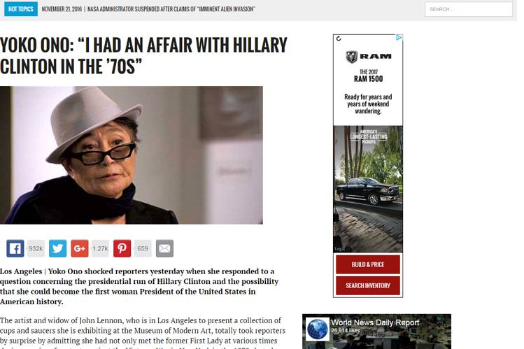

Our Problem
'fake news' is a growing epidemic in the world today.
We live in a time where anyone can put any type of information, whether it's true or false, onto a platform we know as the internet.
Although it serves the great purpose of relaying information to people, some of the millions and millions of users have corrupted it's purpose.
The following pages of this website show an example of what a fake news site might look like, so that you can better prepare yourself and know what to look for.
Things to look for in a fake news site
Fake news often has a few easy ways to be spotted out. the first way is to check for an author preceding, or proceeding the story. If there is no author mentioned,
the source is probably not a trustworthy one. The second way you can spot them is by checking the story for obvious spelling errors. If whoever wrote it did not take the time to proof read it, they most likely are
not a source you should trust. The final easy way to find if news is fake is to check for sources cited. if you notice that there are none, it's most likely fabricated, and you should not treat it as real news.